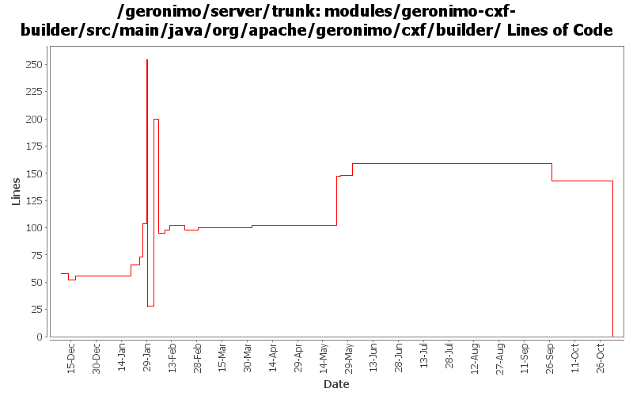

[root]/modules/geronimo-cxf-builder/src/main/java/org/apache/geronimo/cxf/builder

| Author | Changes | Lines of Code | Lines per Change |
|---|---|---|---|
| Totals | 29 (100.0%) | 715 (100.0%) | 24.6 |
| dims | 13 (44.8%) | 562 (78.6%) | 43.2 |
| gawor | 6 (20.7%) | 126 (17.6%) | 21.0 |
| djencks | 3 (10.3%) | 23 (3.2%) | 7.6 |
| jgenender | 2 (6.9%) | 4 (0.6%) | 2.0 |
| prasad | 2 (6.9%) | 0 (0.0%) | 0.0 |
| kevan | 2 (6.9%) | 0 (0.0%) | 0.0 |
| jdillon | 1 (3.4%) | 0 (0.0%) | 0.0 |
GERONIMO-3565. Modules distributed amongst framework/modules and plugins
0 lines of code changed in 2 files:
making cxf intergration more modular: separated ejb bits from servlet bits.
54 lines of code changed in 2 files:
added an option to use sun wsgen tool to generate the wsdl instead of cxf tools (cxf tooling is used by default)
18 lines of code changed in 1 file:
fixed serialization of handler chains to string
6 lines of code changed in 1 file:
added bits to generate the wsdl using wsgen. right now the code is commented out because of bugs in cxf
46 lines of code changed in 1 file:
a fix for client side handlers
2 lines of code changed in 1 file:
GERONIMO-2882 patch committed
4 lines of code changed in 2 files:
(GERONIMO-2858) Applied condition change from Jarek, only change to use props[''] syntax when default not needed
0 lines of code changed in 1 file:
GERONIMO-2849 - service-ref app client test
GERONIMO-2850 - CXF: initial web service support for EJBs
2 lines of code changed in 1 file:
- Ability to specify the ws impl from a system property, example:
-Djavax.xml.ws.spi.Provider=org.apache.axis2.jaxws.spi.Provider
- Default is CXF as per last email from Jarek. So if the system property
is absent, then the first deployer will kick in (which is cxf)
- Ran into a class loader issue because wsdl4j is loaded by multiple
class loaders, so move it into webservices-common config.
4 lines of code changed in 1 file:
Fix for GERONIMO-2807 - CXF: initial service-ref support
40 lines of code changed in 2 files:
Fix for GERONIMO-2796 - HandlerResolver for CXF web servies & other improvements
43 lines of code changed in 2 files:
Fix for GERONIMO-2791 - Switching ServiceRef naming builder
143 lines of code changed in 1 file:
Fix for GERONIMO-2791 - Switching ServiceRef naming builder
29 lines of code changed in 1 file:
move the common jaxws code into a separate maven module, next step would be to fix axis2 modules to reuse the common code
2 lines of code changed in 1 file:
Move common code out to a jaxws package. Looks like we need a new maven2 module for all the common jaxws code. That will be the next step
27 lines of code changed in 1 file:
Fix for GERONIMO-2783 - CXF-based WebServices support: webservices.xml file is no longer required
195 lines of code changed in 1 file:
Fix for GERONIMO-2781 - Improved CXF-based POJO WebService support
72 lines of code changed in 1 file:
GERONIMO-2777 expose mandatory jaxws MessageContext properties
7 lines of code changed in 1 file:
GERONIMO-2756 basic @Resource injection for cxf web services
10 lines of code changed in 1 file:
drilldown into JAXBElement to extract the WebservicesType object, set default transport id (causes NPE if absent)
5 lines of code changed in 1 file:
GERONIMO-2657 rename entity-manager-factory-ref to persistence-unit-ref
6 lines of code changed in 1 file:
GERONIMO-2641 Add license headers to files. Thanks Jarek!
0 lines of code changed in 2 files: